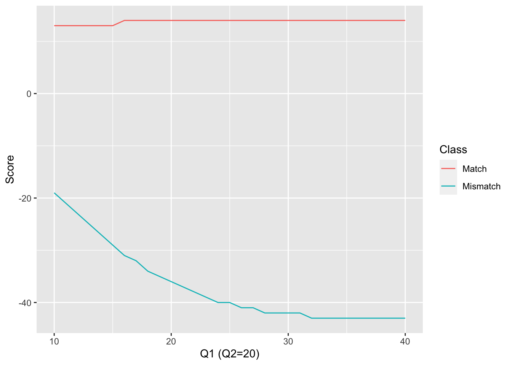

4 The OBITools V4 commands
4.1 Specifying the input files to OBITools commands
4.2 Options common to most of the OBITools commands
4.2.1 Specifying input format
Five sequence formats are accepted for input files. Fasta (Section 2.1.2) and Fastq (Section 2.1.3) are the main ones, EMBL and Genbank allow the use of flat files produced by these two international databases. The last one, ecoPCR, is maintained for compatibility with previous OBITools and allows to read ecoPCR outputs as sequence files.
--ecopcr: Read data following the ecoPCR output format.--emblRead data following the EMBL flatfile format.--genbankRead data following the Genbank flatfile format.
Several encoding schemes have been proposed for quality scores in Fastq format. Currently, OBITools considers Sanger encoding as the standard. For reasons of compatibility with older datasets produced with Solexa sequencers, it is possible, by using the following option, to force the use of the corresponding quality encoding scheme when reading these older files.
--solexaDecodes quality string according to the Solexa specification. (default: false)
4.2.2 Specifying output format
Only two output sequence formats are supported by OBITools, Fasta and Fastq. Fastq is used when output sequences are associated with quality information. Otherwise, Fasta is the default format. However, it is possible to force the output format by using one of the following two options. Forcing the use of Fasta results in the loss of quality information. Conversely, when the Fastq format is forced with sequences that have no quality data, dummy qualities set to 40 for each nucleotide are added.
--fasta-outputRead data following the ecoPCR output format.--fastq-outputRead data following the EMBL flatfile format.
OBITools allows multiple input files to be specified for a single command.
--no-orderWhen several input files are provided, indicates that there is no order among them. (default: false). Using such option can increase a lot the processing of the data.
4.2.3 The Fasta and Fastq annotations format
OBITools extend the Fasta and Fastq formats by introducing a format for the title lines of these formats allowing to annotate every sequence. While the previous version of OBITools used an ad-hoc format for these annotation, this new version introduce the usage of the standard JSON format to store them.
On input, OBITools automatically recognize the format of the annotations, but two options allows to force the parsing following one of them. You should normally not need to use these options.
--input-OBI-headerFASTA/FASTQ title line annotations follow OBI format. (default: false)--input-json-headerFASTA/FASTQ title line annotations follow json format. (default: false)
On output, by default annotation are formatted using the new JSON format. For compatibility with previous version of OBITools and with external scripts and software, it is possible to force the usage of the previous OBITools format.
--output-OBI-header|-Ooutput FASTA/FASTQ title line annotations follow OBI format. (default: false)--output-json-headeroutput FASTA/FASTQ title line annotations follow json format. (default: false)
4.3 OBITools expression language
Several OBITools (e.g. obigrep, obiannotate) allow the user to specify some simple expressions to compute values or define predicates. This expressions are parsed and evaluated using the gval go package, which allows for evaluating go-Like expression.
4.3.1 Variables usable in the expression
sequenceis the sequence object on which the expression is evaluated.annotationsis a map object containing every annotations associated to the currently processed sequence.
4.3.2 Function defined in the language
Instrospection functions
len(x)is a generic function allowing to retreive the size of a object. It returns the length of a sequences, the number of element in a map likeannotations, the number of elements in an array. The reurned value is anint.
Cast functions
int(x)converts if possible thexvalue to an integer value. The function returns anint.numeric(x)converts if possible thexvalue to a float value. The function returns afloat.bool(x)converts if possible thexvalue to a boolean value. The function returns abool.
4.3.3 Accessing to the sequence annotations
The annotations variable is a map object containing all the annotations associated to the currently processed sequence. Index of the map are the attribute names. It exists to possibillities to retreive an annotation. It is possible to use the classical [] indexing operator, putting the attribute name quoted by double quotes between them.
annotations["direction"]The above code retreives the direction annotation. A second notation using the dot (.) is often more convenient.
annotations.directionSpecial attributes of the sequence are accessible only by dedicated methods of the sequence object.
- The sequence identifier :
Id() - THe sequence definition :
Definition()
4.4 Metabarcode design and quality assessment
4.4.1 obipcr
Replace the
ecoPCRoriginal OBITools
4.5 File format conversions
4.5.1 obiconvert
4.6 Sequence annotations
4.6.1 obiannotate
4.6.2 obitag
4.7 Computations on sequences
4.7.1 obipairing
Replace the
illuminapairedendsoriginal OBITools
Alignment procedure
obipairing is introducing a new alignment algorithm compared to the illuminapairedend command of the OBITools V2. Nethertheless this new algorithm has been design to produce the same results than the previous, except in very few cases.
The new algorithm is a two-step procedure. First, a FASTN-type algorithm (Lipman and Pearson 1985) identifies the best offset between the two matched readings. This identifies the region of overlap.
In the second step, the matching regions of the two reads are extracted along with a flanking sequence of \(\Delta\) base pairs. The two subsequences are then aligned using a “one side free end-gap” dynamic programming algorithm. This latter step is only called if at least one mismatch is detected by the FASTP step.
Unless the similarity between the two reads at their overlap region is very low, the addition of the flanking regions in the second step of the alignment ensures the same alignment as if the dynamic programming alignment was performed on the full reads.
The scoring system
In the dynamic programming step, the match and mismatch scores take into account the quality scores of the two aligned nucleotides. By taking these into account, the probability of a true match can be calculated for each aligned base pair.
If we consider a nucleotide read with a quality score \(Q\), the probability of misreading this base (\(P_E\)) is : \[ P_E = 10^{-\frac{Q}{10}} \]
Thus, when a given nucleotide \(X\) is observed with the quality score \(Q\). The probability that \(X\) is really an \(X\) is :
\[ P(X=X) = 1 - P_E \]
Otherwise, \(X\) is actually one of the three other possible nucleotides (\(X_{E1}\), \(X_{E2}\) or \(X_{E3}\)). If we suppose that the three reading error have the same probability :
\[ P(X=X_{E1}) = P(X=X_{E3}) = P(X=X_{E3}) = \frac{P_E}{3} \]
At each position in an alignment where the two nucleotides \(X_1\) and \(X_2\) face each other (not a gapped position), the probability of a true match varies depending on whether \(X_1=X_2\), an observed match, or \(X_1 \neq X_2\), an observed mismatch.
Probability of a true match when \(X_1=X_2\)
That probability can be divided in two parts. First \(X_1\) and \(X_2\) have been correctly read. The corresponding probability is :
\[ \begin{aligned} P_{TM} &= (1- PE_1)(1-PE_2)\\ &=(1 - 10^{-\frac{Q_1}{10} } )(1 - 10^{-\frac{Q_2}{10}} ) \end{aligned} \]
Secondly, a match can occure if the true nucleotides read as \(X_1\) and \(X_2\) are not \(X_1\) and \(X_2\) but identical.
\[ \begin{aligned} P(X_1==X_{E1}) \cap P(X_2==X_{E1}) &= \frac{P_{E1} P_{E2}}{9} \\ P(X_1==X_{Ex}) \cap P(X_2==X_{Ex}) & = \frac{P_{E1} P_{E2}}{3} \end{aligned} \]
The probability of a true match between \(X_1\) and \(X_2\) when \(X_1 = X_2\) an observed match :
\[ \begin{aligned} P(MATCH | X_1 = X_2) = (1- PE_1)(1-PE_2) + \frac{P_{E1} P_{E2}}{3} \end{aligned} \]
Probability of a true match when \(X_1 \neq X_2\)
That probability can be divided in three parts.
- \(X_1\) has been correctly read and \(X_2\) is a sequencing error and is actually equal to \(X_1\). \[ P_a = (1-P_{E1})\frac{P_{E2}}{3} \]
- \(X_2\) has been correctly read and \(X_1\) is a sequencing error and is actually equal to \(X_2\). \[ P_b = (1-P_{E2})\frac{P_{E1}}{3} \]
- \(X_1\) and \(X_2\) corresponds to sequencing error but are actually the same base \(X_{Ex}\) \[ P_c = 2\frac{P_{E1} P_{E2}}{9} \]
Consequently : \[ \begin{aligned} P(MATCH | X_1 \neq X_2) = (1-P_{E1})\frac{P_{E2}}{3} + (1-P_{E2})\frac{P_{E1}}{3} + 2\frac{P_{E1} P_{E2}}{9} \end{aligned} \]
Probability of a match under the random model
The second considered model is a pure random model where every base is equiprobable, hence having a probability of occurrence of a nucleotide equals \(0.25\). Under that hypothesis
\[ P(MATCH | \text{Random model}) = 0.25 \]
The score is a log ration of likelyhood
Score is define as the logarithm of the ratio between the likelyhood of the observations considering the sequencer error model over tha likelyhood u
4.7.2 obimultiplex
Replace the
ngsfilteroriginal OBITools
4.7.3 obicomplement
4.7.4 obiclean
4.7.5 obiuniq
4.8 Sequence sampling and filtering
4.8.1 obigrep
4.9 Utilities
4.9.1 obicount
obicount counts the number of sequence records, the sum of the count attributes, and the sum of the length of all the sequences.
Example:
obicount seq.fasta Prints the number of sequence records contained in the seq.fasta file and the sum of their count attributes.
Options specific to the command
--reads|-rPrints read counts.--symbols|-sPrints symbol counts.--variants|-vPrints variant counts.
4.9.2 obidistribute
4.9.3 obifind
Replace the
ecofindoriginal OBITools.